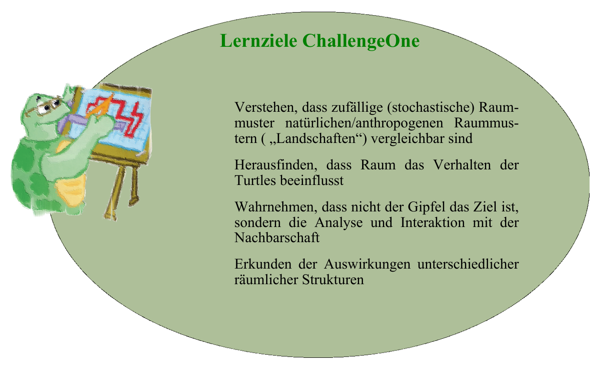
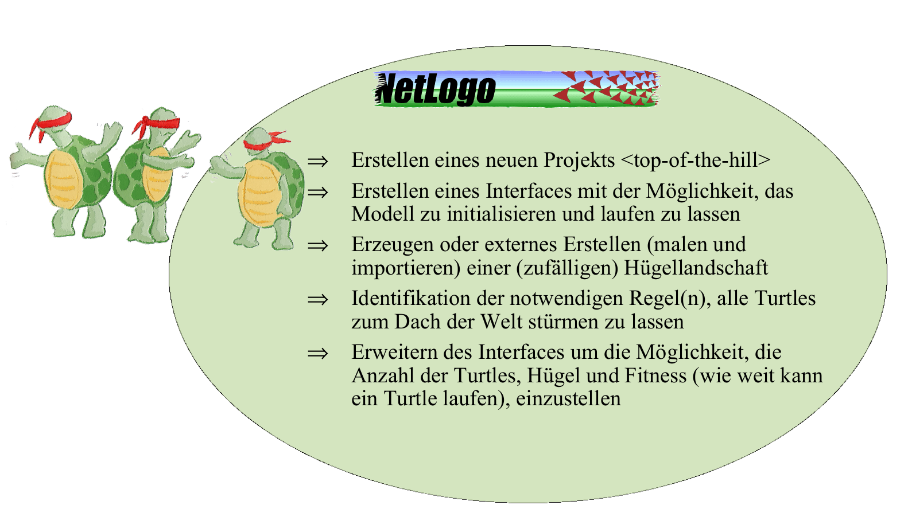
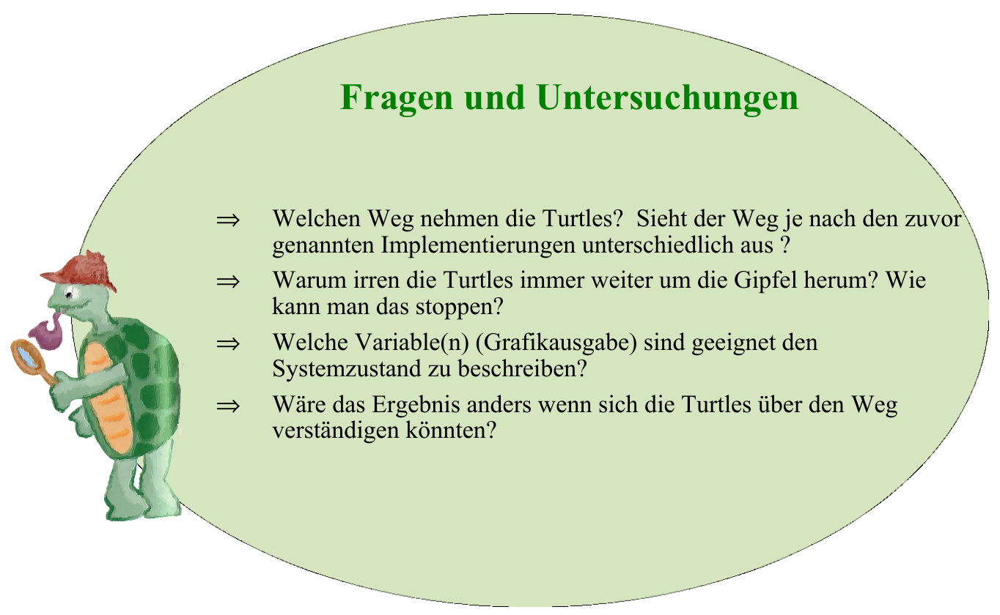
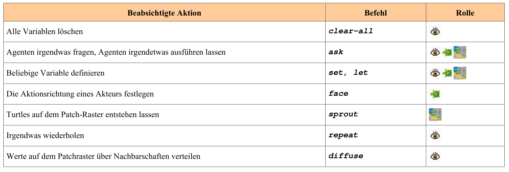

Top of the World
Modelle sind -wie bereits einführend erwähnt- spezifische, vereinfachte Ausschnitte der Wirklichkeit. Diese erste Programmierübung ChallengeOne soll anhand eines einfachen Beispiels vermitteln, wie dieser recht komplexe Vorgang praktisch realisiert werden kann.
Zunächst geht es um die Entwicklung einer Motivation und Fragestellung. Nach Festlegung der Zielsetzung geht es dann um die Hypothesen die untersucht werden sollen. Zur bearbeitung benötige ich ein Konzept oder einen Wirkungsgraph der die funktionalen und regelhaften Wechselwirkungen beschreibt.
Erst dann stellt sich die Frage „Wie programmiere ich das Ganze?“. Leider ist es nicht nur zu Beginn wiissenschaftlicher Modellbildung schwierig diese Ebenen zu trennen und in effizienter Weise zu bearbeiten. Es gibt kein wirkliches Patentrezept. Die Übung ChallengeOne versucht eine praxisorientierte Vorgehensweise aufzuzeigen. Lernziel ist es durch geschicktes und geeignetes Anpassen von Beispielmodellen (=Netlogo-Skripten) und ein eigenes Modell zu erstellen und es schrittweise zu erweitern und verbessern. Dabei ist es, zumindest zu Beginn, nicht zwingend erforderlich den Programmcode (vollständig) zu verstehen (das kommt hoffentlich mit der Übung…), sondern eher darum zu folgende Ziel zu erreichen: „Beurteile ich das Resultat des Programmcodes hinsichtlich meiner Zielsetzung als zureichend?”
Beginnen wir also. 
Schneller, besser, weiter, höher
Motivationsgrundlage unseres Modellierungsvorhabens ist das alte Spiel: Alle wollen nach Möglichkeit besser sein als die Anderen oder zumindest für sich das Beste herausholen – ganz nach dem in gewissen Kreisen berühmten Ausspruch von von Bülow „Mit einem Worte: wir wollen niemand in den Schatten stellen, aber wir verlangen auch unseren Platz an der Sonne”1. In unserem Falle ist der „Platz an der Sonne” nicht Namibia oder Togo, sondern alle wollen frei nach Chris Stangl2 und Kollegen die „Seven Summits” packen – ohne jede weitere Motivation nur auf einem der höchsten Berggipfel3 stehen.
Ziel dieser Übung ist es alle beweglichen Agenten (turtles) auf den höchsten (erreichbaren) Gipfel zu bekommen.
So einfach es auf den ersten Blick erscheint, alle Turtles auf einen Berg zu bekommen, so können doch viele unterschiedliche Abstraktions- und Implementierungs-Konzepte genutzt werden. Was soll das heißen? Nun wenn keine genaueren oder klareren Angaben gemacht werden kann kaum von einer konkreten Zielsetzung geschweige denn von einem Modellkonzept gesprochen werden (vgl. Bossel 2004). Versuchen wir es daher mit einer etwas klareren Abstraktion. Die übergeordneten Lernziele sind im Kasten Lernziele ChallengeOne einzusehen
ChallengeOne - Beschreibung des Problems
Ziel unseres Modellierungsvorhabens ist es die Auswirkungen der behaupteten Neigung von Individuen ihren Vorteil zu optimieren (= den höchsten Punkt zu erreichen) räumlich zu analysieren. Das setzt voraus dass im Raum das zu optimierende Gut (Vorteil) inhomogen verteilt ist. Im Gebirge ist die Höhe inhomogen verteilt sonst wäre es nämlich eine Ebene. Das heißt der Raum besteht aus einzelnen Zellen die eine inhomogene Verteilung eines Parameters (Höhe, Nahrung, Geld, Liebe…) aufweisen. Weiterhin seien unsere Agenten (=Turtles) Einzelgänger die nur nach eigener Wahrnehmung des Raumes (also ohne Kommunikation mit anderen Turtles) das Ziel verfolgen, einen Ort (=Patch) möglichst hohen bzw. den höchsten Ort zu erreichen. Realisiert werden soll dieser Ansatz in einer hügeligen Landschaftsstruktur (=Hügellandschaft).
Netlogo Implementierungskonzept
Die Implementierung beginnt mit der Identifikation der zentralen Anforderungen aus der Problemstellung. Aber was heißt eigentlich „Hügellandschaft”? Wie sieht diese aus? Wie viele Hügel gibt es? Wie viele Turtles bevölkern die Welt „Top of the Hill”? Was genau heißt „die Turtles sind Einzelgänger”?
Darüber hinaus müssen technische Fragen geklärt werden: Welche Reihenfolge in der Vorgehensweise ist sinnvoll. Was sind die notwendigen Einzelschritte etc..

Im obenstehendem Kasten sind in einer Art Pseudo-Programmcode konkrete Hinweise für einen sinnvollen Ablauf gegeben. Allerdings reicht dies noch nicht aus um los zulegen.
Die Welt
Es ist durchaus sinnvoll (wie bei jeder guten Schöpfungsgeschichte), zunächst die Welt zu erschaffen (=den Modellraum festzulegen). Mit dem Anlegen eines neuen Projekts wird eine Standard-Umgebung generiert (vgl. Netlogo Tutorial 1,2,3). Diese sollte nach dem Modellzweck (in diesem Fall Standard/Default) angepasst werden (Tutorial 1->Controlling the View).
Hinweis: Da in Netlogo nicht direkt (wie bei einem rasterbasierten Grafikprogramm) die Patches „angemalt” werden können, muss man dies entweder programmieren oder es muss eine bereits existierende „Welt” eingeladen werden.
Vorgehensweise: Für die hier gestellte Aufgabe erscheint die Programmierung einer einfachen Setup-Prozedur sinnvoll. Betrachtet man die Anforderungen müssen folgende Kriterien berücksichtigt werden:**
Festlegung einer bestimmten Anzahl von Gipfelpunkten
Zuweisen von Höhenwerten für diese Punkte
Erzeugen von Talstrukturen zwischen diesen Gipfeln (unter Verwendung der Höhenwerte)
Visualisierung der „Landschaft”
Umsetzung: Natürlich kann man jetzt sofort ins Handbuch schauen und los programmieren. Einfacher und meistens ziel orientierter ist es sich anzuschauen was es an Problemlösungen gibt. In Netlogo werden eine Vielzahl von Beispiel-Modellen und Code-Schnipsel in der Model Library angeboten. Alle sind ausgezeichnet dokumentiert und im Quellcode zusätzlich kommentiert. Als Newbie sollte man unbedingt hier stöbern gehen. Am besten (weil am einfachsten aufgebaut) beginnt man mit der Suche in den Code-Beispielen. Dort springt das Hill Climbing Example ins Auge. Im Intro steht „This example shows how to make turtles climb hills -- or descend into valleys -- using the UPHILL, UPHILL4, DOWNHILL, and DOWNHILL4 commands. The same technique is useful for modeling any kind of creature that follows a gradient in its environment”. Offensichtlich eine ideale Vorlage für unser Problem. Also folgt die konkrete Aufgabe:**
Aufgabe: Analyse des Quellcodes des *Hillclimbing Examples.
Im Prinzip liefert das Hillclimbing Example sowohl Welt als auch Turtles. Wir müssen nur einige Anpassungen vornehmen. Nach der Analyse sollten die folgenden Fragen relativ leicht beantwortet werden können:
Wie funktioniert der Befehl diffuse? Können damit kontrolliert Höhenwerte erzeugt werden?
An welcher Stelle des Scripts muss eine Variable eingesetzt werden um mit Hilfe eines Sliders die Anzahl der Turtles einstellen zu können?
An welcher Stelle muss dies für die Anzahl der Hügel geschehen?
Wie kann man über das Interface einstellen ob die Turtles ihren Weg markieren (pen-up, pen-down)?
Die Turtles
Eigentlich geht es erst jetzt daran die Turtles in diese Welt zu setzten. Es gilt ein möglichst einfaches Regelwerk zu finden, das die Turtles veranlasst, stets nach den Höhen zu streben. Folgende Kriterien müssen berücksichtigt werden:
Festlegung einer bestimmten Anzahl von Turtles
Implementieren einer geeigneten Wahrnehmung des Kriteriums „Höhe des Patches”
Implementieren, mit Hilfe dieser Information den höchsten Punkt zu erreichen
Visualisierung
Vertiefung: Weiterhin steht das Hillclimbing Example Pate. Allerdings wurde im Lösungsscript ChallengeOneBasic gewollt auf die Funktion uphill verzichtet. Warum? Netlogo verfügt über eine oft unübersichtliche Vielzahl von bereits implementieren Funktionen (sog. Primitive). Anhand der Unterschiede von uphill und dem verwendeten max-one-of neighbors soll bereits zum Einstieg das der Netlogo Programmierung zugrunde liegende Konzept von Befehlen, Funktionen und Primitiven4 besser verstanden werden. ::: {.callout-tip appearance=“simple”} Uphill (Hillclimbing Example) ist ein Beispiel für eine komfortable existierende Funktion weil es, wie in der Hilfe zu lesen ist, in einem Schritt mehrere Befehle ausführt:
„[it] moves the turtle to the neighboring patch with the highest value **for patch-variable”. :::
Das heißt uphill identifiziert die (1) „Was ist benachbart? (2) Was ist der höchste Wert in der Nachbarschaft? Und (3) bewegt das Turtle dorthin. Da sich Agenten (Turtles) häufig entlang einer Gradientenkraft bewegen sollen ist es sinnvoll und hifreich eine derartige Funktion in Netlogo verfügbar zu haben. Die gleiche Funktion ist allerdings nicht hilfreich, falls z.B. differenziert entschieden werden muss ob in Richtung des höchsten oder zweithöchsten (etc.) Wertes und ob dann 1, 2 oder *n Schritte weit gegangen werden soll oder ob etwa sofort zu diesem Punkt gegangen wird.
Die Unterschiede zu max-one-of neighbors werden durch eine nähere Betrachtung des Beispielprogramms Neighborhoods Example deutlicher.Für solche Ziele ist der Befehl max-one-of neighbors geeigneter. Er analysiert beliebige Raummerkmale in der Nachbarschaft flexibler. max-one-of bzw. min-one-of sucht nach dem höchsten bzw. niedrigsten Wert eines sog. agentsets. Das Agenset kann eine beliebige (auch frei definierte) Auswahl (Gruppe) von Agenten sein (z.B. neighbors oder spezielle Gruppen von Turtles etc.).
Neighbors ist, vergleichbar mit uphill, eine spezialisierte Funktion, die die Werte in der vollständigen Patch-Nachbarschaft (von Neumann’sche neighbors4, Moor’sche neighbors) mit einem Befehl„erfragt”. Da die Nachbarn patches sind (=unbewegliche Agenten =ein agentset) kann neighbors einfach an max-one-of angehangen werden. Als Resultat liest sich der Befehl wie in der Menschensprache. Diese Vorgehensweise, sowohl beim Zusammensetzten von Befehlen als auch der schrittweisen Substitution allgemeiner Befehle/Funktionen durch komplexere Funktionen, ist LOGO-spezifisch und sollte verstanden und geübt werden.
Natürlich zeigt das ChallengeOneBasic-Beispiel, dass es nicht sinnvoll ist (wie es oben allerdings aus didaktischen Gründen durchgeführt wurde) Turtles und Patches während der Implementierung getrennt voneinander zu betrachten. Auch hier sei für das bessere Verständnis auf die Beispielprogramme hingewiesen In Kontext von ChallengeOne sind die folgenden Code Examples sowohl für spezifische Lösungen als auch Programmierkonzepte in Netlogo von besonderer Bedeutung:
Rasternachbarschaft erkunden: Neighborhoods, Moore & Von Neumann, Vision Cone
Visualisierung der Daten: Plot Axis
Direkte Kommunikation von Agenten: Communication-T-T, Communication-T-P
Gipfelstürmer und was nun?
Schneller, besser, weiter, höher… ist nur der Anfang. Es drängen sich eine Reihe von noch nicht gelösten Fragen und Optimierung auf. So z.B. ist die Visualisierung der Hügel und ihre Formgebung noch wenig ansprechend (oder gar naturnah…). Man könnte auch Informationen über den Zustand der Turtles sammeln und visualisieren oder speichern. Eingedenk der Einleitung kann z.B. die aktuelle minimale, mittlere bzw. maximale Höhe der Agenten eine Maßzahl für seinen Glückszustand sein (=je höher das Turtle je glücklicher). Auch ist bei der vorliegenden Implementierung die Frage ungelöst ob und wie es erreicht werden kann, dass alle Turtles irgendwann auf dem höchsten Gipfel stehen (bleiben). Im Kasten Fragen und Untersuchungen sind einige Anregungen für Modellerweiterungen und Fragen aufgelistet.

Im Script ChallengeOneAdvanced sind die meisten dieser Fragen bearbeitet. Es bietet eine gute Grundlage um sich mit der Programmierung und den unterschiedlichen Auswirkungen der Suchstrategien vertraut zu machen. Das Skript ist ausführlich kommentiert. Es sollte unbedingt durchgearbeitet werden
Verwendete Strukturen und Befehle im Skript ChallengeOneBasic
Beispielhaft sind in Tabelle 1 die Befehle aufgelistet. Unter beabsichtigte Aktion ist in normaler Sprache skizziert was mit dem Befehl erreicht werden soll während unter Rolle das unbedingt zu berücksichtigende Akteurskonzept von Netlogo dargestellt ist (vgl. auch Tutorial #2: Commands). Für eigene Aktivitäten um etwa die Bearbeitung der Anregungen umsetzten zu können, hilft nur das konsequente Nutzen des NetLogo Programming Guides und NetLogo Dictionaries. Ganz wichtig für das Erlernen von Netlogo ist natürlich das „Abschauen” von Lösungswegen aus Modellen der Model Library.
Gerade als Anfänger darf nicht verwirren, dass viele Befehle miteinander kombinierbar sind. So ist z.B. max-one-of neighbors aus den einzelnen Primitiven max-one-of und neighbors zusammengesetzt. Viele Primitive sind mit with erweiterbar (Achtung mit oder ohne Bindestrich erzielt völlig unterschiedliche Resultate). Also einfach im Command Center ausprobieren was bei Eingabe eines Befehls passiert – anders als in der Wirklichkeit kann nichts kaputtgehen. Eine aus meiner Sicht gelungene Zusammenstellung des Programmierkonzepts von Netlogo inkl. der Begriffsdefinition von Agenten, Prozeduren Funktionen und Primitive hat René Doursat für die Second Annual French Complex Systems Summer School erstellt. Hier werden alle notwendigen Konzepte klar strukturiert erläutert. Auf der Seite der Summerschool finden sich noch einige weitere interessante Beiträge unterschiedlicher Autoren[^6].
 Tabelle : Hinweise zu den verwendeten Befehlen
Übungen
Die Skripte ChallengeOneBasic und ChallengeOneAdvanced sind auf github verfügbar Das Basic Script implementiert die Grundfragestellung ohne viel Schnörkel. Im Advanced sind die meisten der im Kasten Fragen und Untersuchungen angeregten Punkte bearbeitet. Vor allem sollte man sich mit der unterschiedlichen Wirkungsweise der Befehle und damit dem Raumverhalten der Turtles auseinandersetzen. Hierzu dient Import turtleposition. Auch die Programmierlogik ist nun erweitert um ifelse abfragen und die Möglichkeit Dateien auszuschreiben und wieder einzulesen.
Zusammenfassung
In dieser ersten Programmierübung sollte ein erster Einstieg in die Programmierung von Mensch-Umweltsystemen erreicht werden. Es wurde gezielt eine etwas zugespitzte Motivationsgrundlage gewählt um zu zeigen dass die wirklichen Fragen sich erst ergeben wenn eine erste Abstraktion implementiert ist und die Resultate interpretiert werden müssen. Gleichzeitig sollte an einem sehr übersichtlichen Beispiel das Grundgerüst der Netlogo Entwicklungsumgebung, diesmal Bottom up verständlich gemacht werden. In der Advanced Version kommen vor allem weitere technische Programmierfähigkeiten hinzu. Hier geht es um bedingte Abfragen und Dateneingabe bzw und -ausgabe.
Literatur
Bolzen 2009. Das Flüchtlingsdrama und die Hilflosigkeit der EU.Zugriff: 11/11/23
Dienelt 2006: Bootsflüchtlinge Ceuta, Melilla, Lampedusa, Malta, EU-Kommission Hampton Court Zugriff: 11/11/23
Grimm V. Berger U. Bastiansen F. Eliassen S. Ginot V. Giske J. Goss-Custard J. Grand T. Heinz SK. Huse G. Huth A. Jepsen JU. Jorgensen C. Mooij WM. Muller B. Pe’er G. Piou C. Railsback SF. Robbins AM. Robbins MM. Rossmanith E. Ruger N.(2006): A standard protocol for describing individual-based and agent-based models. Ecological Modelling. v198. 115-126. Issues 1-2, 2006, p. 115-126. https://doi.org/10.1016/j.ecolmodel.2006.04.023
Tobler, W.R., 1970. A Computer Movie Simulating Urban Growth in the Detroit Region. Economic Geography, 46, 234.
Werlen, B., 1993. Gibt es eine Geographie ohne Raum? Zum Verhältnis von traditioneller Geographie und zeitgenössischen Gesellschaften.. Erdkunde, 47, 241.
Janssen, M., 2008b: NetLogo 4.02 Code of Replication of the well known Artificial Anasazi model that simulate the population dynamics between 800 and 1350 in the Long House Valley in Arizona. https://www.comses.net/codebases/2222/releases/1.1.0/. Zugriff: 12/11/23
Footnotes
Bernhard von Bülow in einer Reichtagsdebatte am 6. Dezember 1897. Zugriff 11/11/23↩︎
Chris Stangl Zugriff 11/11/23↩︎
Die Turtles Grafiken sind verändert und bearbeitet aus dem empfehlenswerten Buch von: Colella, V., E. Klopfer, and M. Resnick. 2001. Adventures in Modeling: Exploring Complex, Dynamic Systems with StarLogo. Teachers College Press.↩︎
Für eine gute Übersicht der Netlogo Struktur sei das Netlogo Tutorial von René Doursat genannt. Zugriff 11/11/23.↩︎